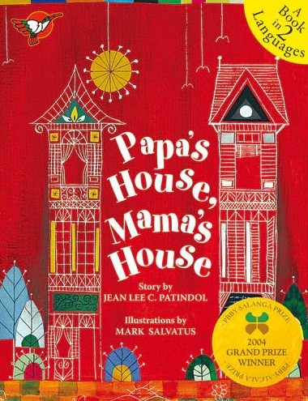

| 1 |
Si Lola Apura at si Lolo Un Momento
|
Authors: I.S.A. Lopez, Vanessa Tamayo (Illustrator)
Lola Apura and Lolo Un Momento—their looks are different and their ways are different. But wherever they go, and whatever they do, they always help each other and are happy to.
Si Lola Apura at si Lolo Un Momento—sa kilos at itsura ay talagang magkaiba. Pero saan man magpunta at anuman ang gawin, sila'y nagtutulungan at palaging masaya! |
January 1, 2015 |
Adarna House |
| 2 |
Papa's House, Mama's House |
Authors: Jeanette Patindol, Mark Ramsel N. Salvatus III (Illustrator)
A child recounts how he and his siblings live in their Mama’s house some days, and in their Papa’s house during the other days. Told from the voice of a child, this book reminds us that children who grow up with two parents in one home are raised and loved no differently than those who have two homes.
Ikinukuwento ng isang bata kung paanong nakatira siya at ang kaniyang mga kapatid sa bahay ng Mama nila kung minsan, at sa bahay naman ng Papa nila sa ibang araw. Inilalahad mula sa tinig ng isang bata, ipinaalala ng librong ito na ang mga batang kasama ang dalawang magulang sa iisang tahanan ay pinalalaki at minamahal nang di kaiba sa mga batang may dalawang tahanan. |
January 1, 2004 |
Adarna House |
| 3 |
Nemo: Ang Batang Papel
|
Authors: Rene O. Villanueva, Ani Rosa S. Almario (Translator), Haru H. Sabijon (Illustrator)
Nemo is a boy made of paper. He becomes a real boy after wishing on the farthest star. But Nemo never experiences the happiness of an ordinary child. He goes through many hardships as he tries to earn a living in a dangerous city. Together with other street children, Nemo decides that it is better to be a boy made of paper. This story illustrates a social problem that involves children. It also deals with the rights and needs of children, as well as the role of the family, the community, and the government to address these.
May layang lumipad bilang batang papel si Nemo. Pero mas gusto niyang tumakbo, tumawa, at maglaro tulad ng isang tunay na bata. |
January 1, 1994 |
Adarna House |
| 4 |
Ang Ikaklit sa aming Hardin
|
Authors: Bernadette Villanueva Neri, C.J. de Silva-Ong (Illustrator), Jennifer del Rosario-Malonzo (Translator), Jennifer T. Padilla-Quntos (Book Designer)
Sa mahigit tatlong dekada ng modernong panitikang pambata sa Pilipinas, ngayon lamang nagkaroon ng kapangahasang talakayin ang mapagkandiling ugnayan ng magkatipang lesbiyana at ang hangad nilang bumuo ng pamilya. Kaparat-dapat ipagdiwang ito sa kapangyarihang makapagmulat. Hardin ang pangunahing simbolo ng aklat—isang santuwaryo at espasyong maghihilom sa mga sugatang damdamin. Ito rin ang pangunahing birtud ng aklat—ang itaguyod ang karapatang pantao, pagmamahal, at pag-unawa. Sa pagsasanib ng dalawang talento nina Bernadette Villanueva Neri at CJ de Silva, hinahangad ko ang pamumulaklak ng pinunla nilang bagong binhi sa landasin ng panitikan para sa bata. |
January 1, 2012 |
Publikasyong Twamkittens |
| 5 |
Ibong Adarna
|
Author: Jason Sto. Domingo (Illustrator)
Three princes went on a journey to catch the elusive and enchanting Adarna bird, to cure the sickness of their father, the King. One of the best known Filipino folk stories, Ibong Adarna is filled with adventure and magic.
Tatlong prinsipe ang naglakbay upang hulihin ang mailap at kabigha-bighaning ibong Adarna, upang malunasan ang karamdaman ng kanilang amang hari. Isa sa mga kilalang kuwentong-bayan sa Filipino, ang kuwento ng Ibong Adarna ay puno ng abentura at mahika. |
January 1, 2015 |
Adarna House |